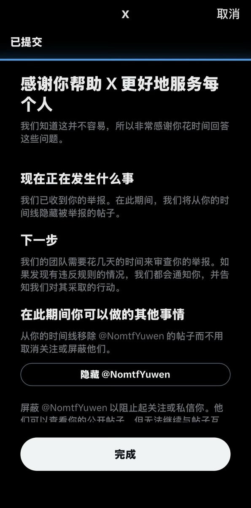

サイバー環状線
@CyberKanjousen
@NomtfYuwen @YueDongQwQ @zqtlovekris99 您好

サイバー環状線
@CyberKanjousen
《关于办理侵犯公民个人信息刑事案件适用法律若干问题的解释》：
向不特定多数人发布公民个人信息，情节严重的，构成侵犯公民个人信息罪。
（单纯公开真实姓名通常不直接入刑，但如果明知会引发网暴仍大量传播，极易被认定为“情节严重”，以侵犯公民个人信息罪定罪。）
《治安管理处罚法》第42条： https://t.co/8MFowU4u6f https://t.co/mqbcui8FEL
唐毓文
@NomtfYuwen
您好@YueDongQwQ
您已被@zqtlovekris99 投稿至不药娘网（https://t.co/mDgqnx3YLI）
评级为：5（后唐毓文复审改为4+）
详细信息请查询：https://t.co/mDgqnx3YLI https://t.co/w2cpzUnv52